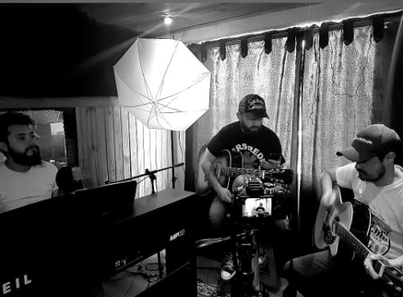
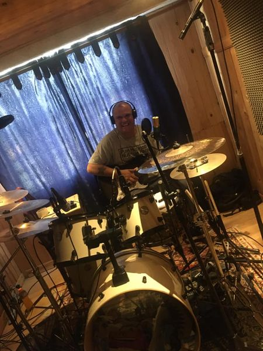
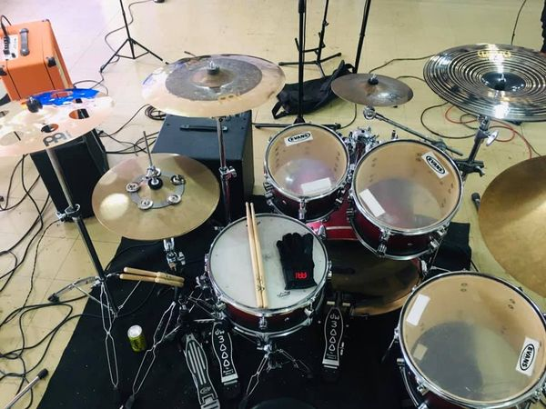

Promoción Musical
 [Música]. (2016). pixabay.com. https://cdn.pixabay.com
[Música]. (2016). pixabay.com. https://cdn.pixabay.com
Si creeso o sabes que tienes algún talento musical y quieres explorar tu capacidad estética, que puedes cantar o interpretar algún instrumento ven a nuestro estudio de grabación y muestra de lo que eres capaz de comunicar con tu arte musical.
Podemos apoyarte con las mejoras en la técnica, tomar lecciones con nosotros, contarnos tus proyectos y hacerlos realidad en un proceso de producción y acompañamiento musical.
Estamos listos para ayudarte en:
- Asesoramiento.
- Preparación
- Formación
- Grabación
- Producción
Contamos con la formación musical y el criterio necesario para ayudarte a encontrar al artista que hay en tí.
Galería de Fotos
 [Fotografía del autor: Indalecio Millán]. (2019). www.facebook.com [Fotografía del autor: Indalecio Millán]. (2019). www.facebook.com
 [Fotografía del autor: Indalecio Millán]. (2019). www.facebook.com
Galería de Videos